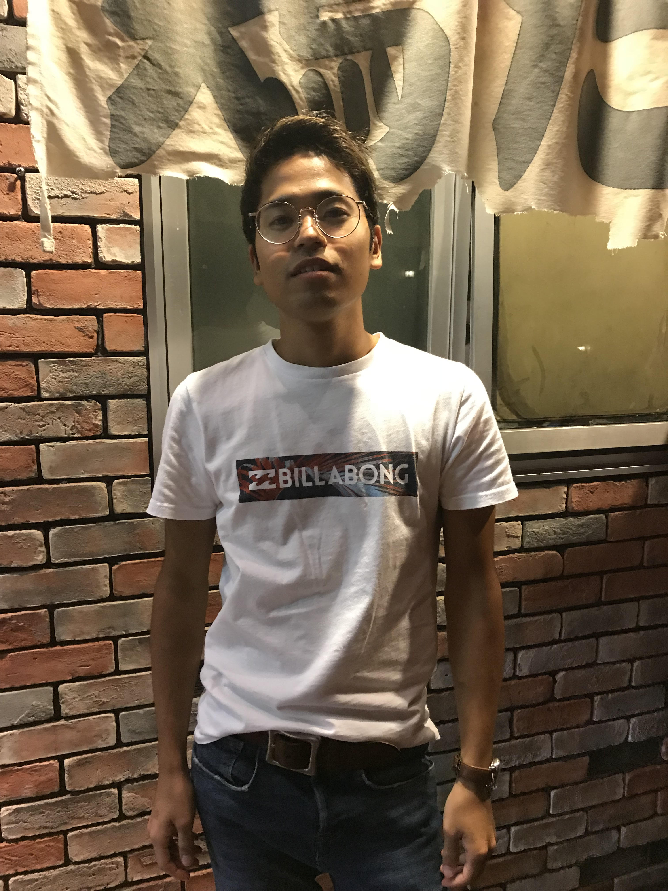

2022年1月20日
＜体は変えられる＞僕はもともとガリガリでした。身長169㎝で体重が55kgしかありませんでした。（笑）
そんな中でも、家の近くにジムができたり、友人や先輩がトレーニングしてかっこいい体作り
をしている姿に憧れて自分もジムに通い始めました。
ジムに通い始めてみて、初めてやったベンチプレスは40kgを1回上げるのが限界｡
一方、友人は70kg、80kgを平然と上げていた。
すごい。自分も追いつきたい。そんな思いでトレーニングに火が付いた。
だんだん、ジムでのトレーニングに慣れてきて、一通りのトレーニングが分かるようになった。
体つきも少しずつ変わってきて、持ち上げられる重量も重くなってきた。
でも、どうしても60kg以上が持ち上がらない。
当時のぼくは、食事がおろそかだった。
どれだけトレーニングをしてもどれだけ筋肉に負荷をかけても、
筋肉を修復する材料つまり栄養がなければ筋肉は育たない。
今となってはそんな当たり前のことができていなかった。
一日どれくらいのカロリーをとって、どんな栄養バランスで食事をとればいいのか調べ上げた。
一日で大学の食堂に4回もいったこともあった。
食生活を意識してからは体重も増え、トレーニングの強度も上がってきた。
気づけば体重は13kgも増えていた。（その代わり顔はパンパンに膨れ上がっていました。（笑））
次回へ続く...

2022年1月17日
トレーニング内容(胸)- ベンチプレス→70kg×9rep
- インクラインダンベルフライ→22kg×10rep,6rep,5rep
- フレンチプレス→20kg×8rep,8rep,10rep
2022年1月14日
トレーニング内容(肩)- ショルダープレス→22kg×10rep,24kg×10rep,8rep,7rep
- リアレイズ→24kg×10rep,26kg×10rep,28kg×8rep,6rep
- サイドレイズ→14kg×15rep,13rep,10rep
2022年1月11日
トレーニング内容- 懸垂→10rep,8rep,6rep
- ローイングマシン（上）→54kg×10rep,61kg×8rep,8rep
- ローイングマシン（下）→68kg×10rep,9rep,8rep
肩をすくめない意識が大切である。肩をすくめてしまうと僧帽筋に力が入ってしまう。
2022年1月10日
トレーニング内容- ベンチプレス→80kg×3rep,70kg×8rep,7rep,6rep
- インクラインダンベルフライ→22kg×10rep,9rep,8rep